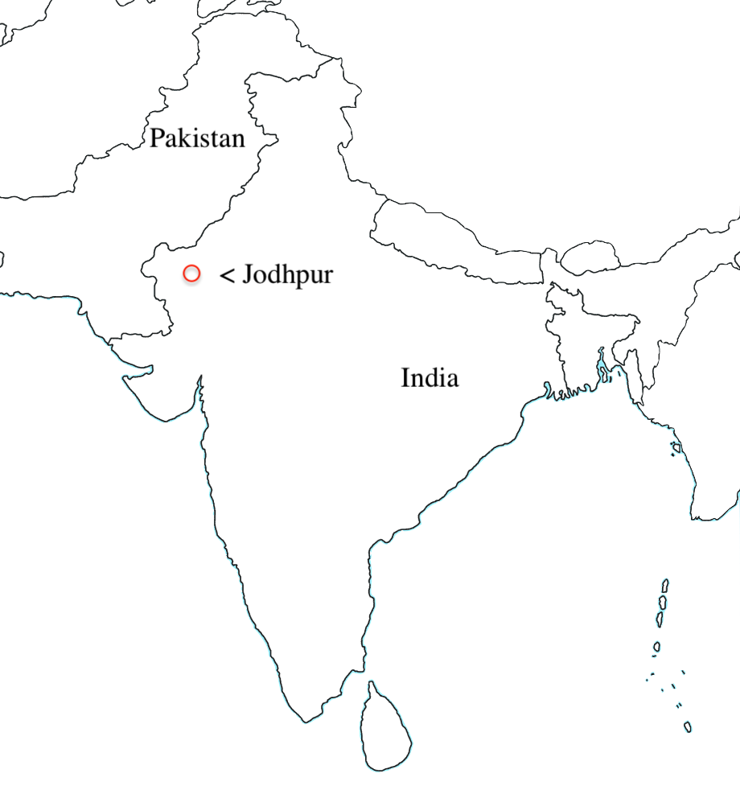

The house that Nisha moved into was in Jodhpur New India. The house was described as a one-room flat over a spice shop. The house has a small kitchen with a sink and a stove. But the water only runs a few hours a day. Raj and Rupesh’s uncle set up the house for them. Moving to the new house is significant because moving out of the place where Nisha and her family have lived their entire life and their old house to a new place just so that they don't get persuaded. (Hiranandani)
